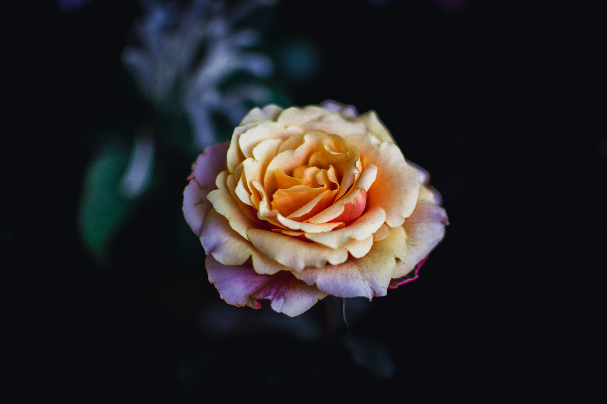

Bunga (serapan dari Jawa: ꦧꦸꦔꦃ, translit. bungah) atau kembang (serapan dari Jawa: ꦏꦼꦩ꧀ꦧꦁ) adalah alat
reproduksi seksual pada tumbuhan berbunga (divisio Magnoliophyta atau Angiospermae, "tumbuhan berbiji
tertutup"). Pada bunga terdapat organ reproduksi, yaitu benang sari dan putik.
Bunga dapat muncul secara tunggal maupun bersama-sama dalam satu rangkaian. Bunga yang muncul secara
bersama-sama disebut sebagai bunga majemuk atau inflorescence. Pada beberapa spesies, bunga majemuk dapat
dianggap awam sebagai bunga (tunggal), misalnya pada Anthurium dan bunga matahari. Satuan bunga yang
menyusun bunga majemuk disebut floret.
Secara botani, bunga adalah bagian tanaman untuk menghasilkan biji. Penyerbukan dan pembuahan berlangsung
pada bunga. Setelah pembuahan, bunga akan berkembang lebih lanjut membentuk buah. Pada tumbuhan berbunga,
buah adalah struktur yang membawa dan melindungi biji.